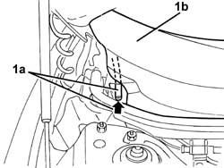
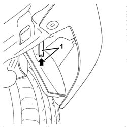
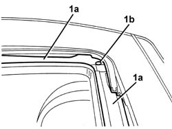

7030B38 sliding roof drainage pipes (water drain) - check
- Path
- Procedures > 70 FITTINGS > 7030 SUN ROOF AND HOOD > 7030B sliding roof > 7030B38 sliding roof drainage pipes (water drain) - check
- Kind
- repair procedure (removal / refitting; the operation number is the code)
- Applies to
- all engines; all production periods
- Interactive page
- https://sloeber94.github.io/elrnDB-a147/en/#/3025772
Applies to: all engines; all production periods
7030B18 sliding roof glass - r+r
Operate the sun roof so that the slides are in the fully open position.
Remove foreign bodies (leaves etc.) from the sun-roof compartment.
1. Open the bonnet and blow compressed air in the bottom ends (1a) of the front drainage pipes. If necessary, remove the trim (1b) (7055A18 Windscreen base TRIM - R.R. ).

Applies to: all engines; all production periods
1. Working under the rear bumper, blow compressed air into the lower ends of the rear drainage pipes.

Applies to: all engines; all production periods
1. Remove any foreign bodies from the channels (1a) and drainage holes (1b) in the sun roof housing.

Applies to: all engines; all production periods
Pour a small amount of water into the channels and drainage holes. Ensure the water comes out of the pipes.